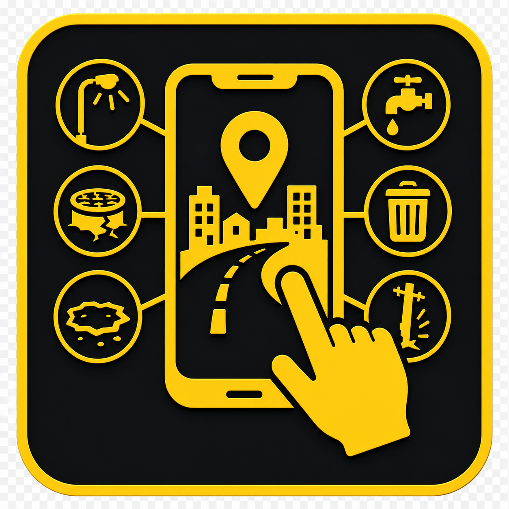
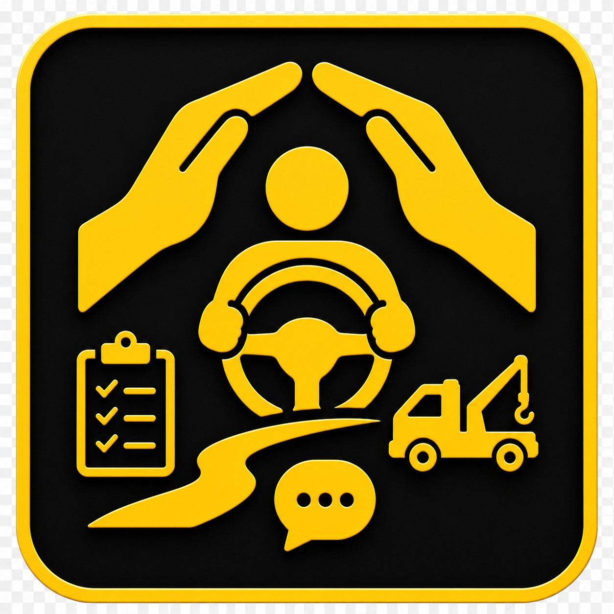

Prioridades
Propostas para Espírito Santo / Cariacica
Conheça algumas das principais propostas de Delso Gomes para o Espírito Santo.
-
Trânsito e infraestrutura
Gabinete Técnico
Criar um Gabinete Técnico especializado, formado por engenheiros de trânsito, engenheiros estruturais, advogados especializados em trânsito e outros profissionais. A equipe terá a missão de analisar problemas viários, propor soluções técnicas, acompanhar obras e fiscalizar as condições de pontes, viadutos e demais estruturas viárias do Espírito Santo, cobrando dos órgãos responsáveis as providências necessárias.
-
Fiscalização de trânsito
Combate à indústria da multa
Manter um trabalho permanente de combate às irregularidades na fiscalização de trânsito, denunciando radares instalados ou operando de forma irregular, equipamentos encobertos por vegetação ou estruturas e situações que possam prejudicar o direito do motorista à informação. Esse trabalho já vem sendo realizado há anos, com denúncias e cobranças que contribuíram, inclusive, para a retirada ou correção de equipamentos considerados irregulares.
-

Participação cidadã
Aplicativo para solução de problemas urbanos
Criar um aplicativo para aproximar a população do nosso trabalho. Ao encontrar um problema no trânsito, nas ruas ou nas estradas, o cidadão poderá gravar um vídeo, registrar a localização e enviá-lo pelo aplicativo. A demanda será analisada e encaminhada ao órgão responsável, com cobrança e acompanhamento até que uma solução seja apresentada. Você mostra o problema; nós ajudamos a cobrar a solução.
-

Apoio ao motorista
Instituto de Apoio ao Motorista
Defender a criação do Instituto de Apoio ao Motorista, voltado à orientação e defesa de motoristas e motociclistas diante de situações injustas no trânsito. Um exemplo: se um buraco em uma via pública danificar o pneu, a roda ou outra parte do veículo, o cidadão poderá receber orientação e apoio jurídico gratuito para buscar o ressarcimento do prejuízo, quando houver fundamento legal. O Instituto também poderá orientar motoristas diante de multas com indícios de erro ou outras irregularidades.